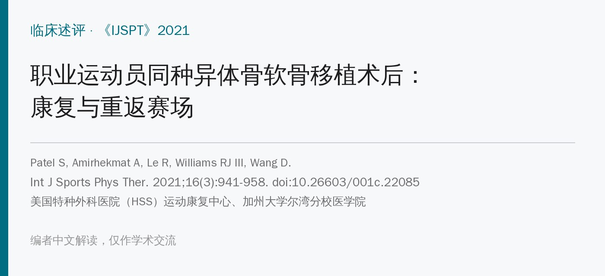
🔖原文信息（编者中文重排）
📚 文献信息
▪ Patel S, Amirhekmat A, Le R, Williams RJ III, Wang D. Osteochondral Allograft Transplantation in Professional Athletes: Rehabilitation and Return to Play. International Journal of Sports Physical Therapy. 2021;16(3):941-958. doi:10.26603/001c.22085
▪ 作者单位：美国特种外科医院（HSS）运动康复中心和运动医学研究所、加州大学尔湾分校医学院
▪ 文章类型：临床述评 / 现状综述——作者团队的经验方案，不是研究
年轻运动员膝关节的大面积软骨或骨软骨缺损，常用同种异体骨软骨移植（OCA）治疗：把供体成熟的关节软骨连同下面的骨一次性移植过来。移植的是成熟的透明软骨，术后马上就能承受关节负荷，所以康复和回归可以比植入“未成熟软骨”的手术更快。
文献报道 OCA 后回归运动的比例约 75%～82%，一般在术后 8～12 个月回归。但职业运动员对膝关节要求极高，术前往往已经带着疼痛训练很久，形成了代偿；又有很大的心理压力想尽快回到同等水平。作者介绍了他们给职业运动员用的五期康复方案。
作者强调两点：一是以标准而不是时间推进，减少反复疼痛和积液；二是家庭训练的重要性——每周 3 次、每次 1 小时的治疗只占一周 168 小时的约 2%，剩下 98% 靠运动员自己。
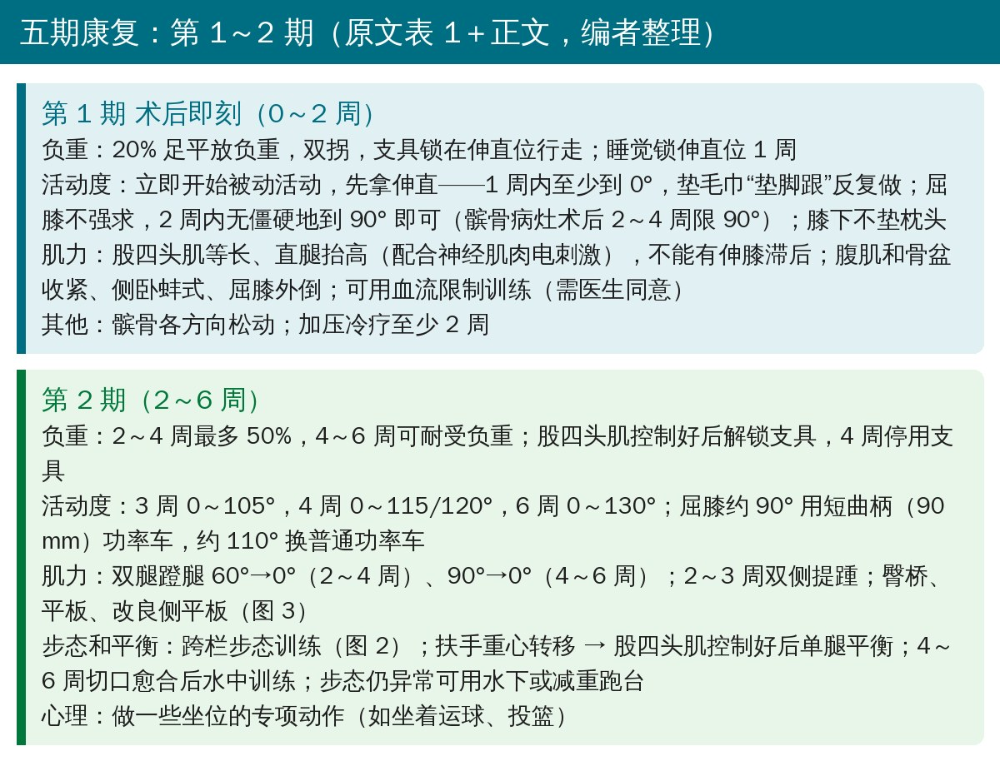
🔖第 1～2 期（编者根据原文表 1 和正文整理）
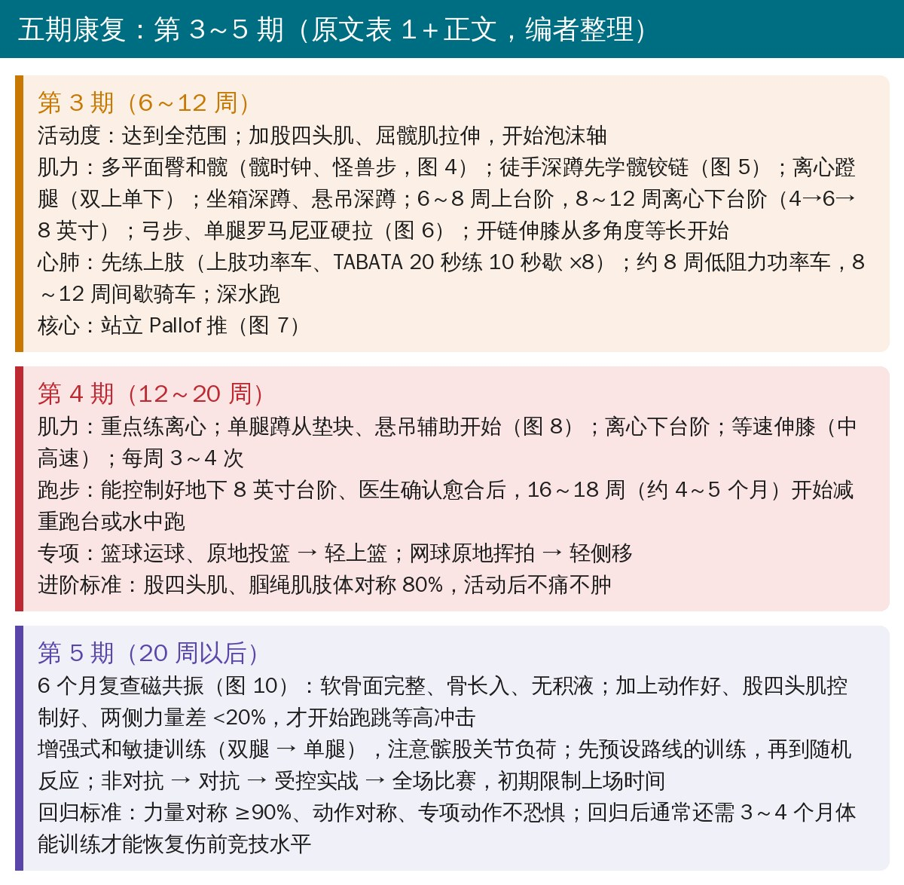
🔖第 3～5 期（编者根据原文表 1 和正文整理）
• 早负重：作者的经验是 20% 足平放负重 1～2 周，再逐步到完全负重，能减少肌萎缩、更早开始功能训练——但前提是术中骨块固定牢靠；行走时支具锁在伸直位，减少剪切力
• 伸直第一：1 周内至少到 0°；伸不直会带来步态异常、髌股症状和后期的生物力学问题
• 屈膝不强求：强行屈膝会加重疼痛和积液；2 周内无僵硬地到 90° 就够，无症状可继续被动增加（髌骨病灶例外，2～4 周限 90°）
• 髌骨松动：向上滑动关系到伸直，向下滑动关系到屈曲，常被忽视；配合髌上、髌下软组织手法
• 股四头肌：术后第 1 天就开始，配合电刺激；可加血流限制训练（20%～30% 1RM 即可增肌增力，还可能减轻疼痛和积液）
• 冷疗和加压：疼痛和肿胀会抑制股四头肌；主动加压冷疗至少用 2 周
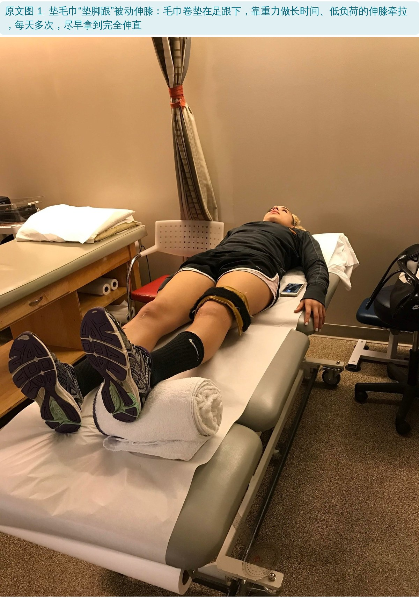
🔖原文图 1：垫毛巾“垫脚跟”被动伸膝
• 负重阶梯：20% 足尖点地 → 50%（双拐）→ 75%（单拐）→ 可耐受负重并脱拐
• 步态：长期锁支具容易形成划圈步态，去掉支具后还可能保留，引起髋和腰痛；用跨小栏架训练足跟着地伸膝、摆动期屈膝；仍异常可用水下或减重跑台
• 功率车：屈膝约 90° 用短曲柄（90 mm），约 110° 换普通功率车
• 动力链：弹力带臀桥、平板、改良侧平板，激活后、前、外侧——但要选对动作，别给膝和移植物太大压力
• 水中训练：切口愈合（约 4～6 周）后开始，水到腋下时负重可降到体重的约 25%
• 心理：让篮球运动员坐着运球、投篮，网球运动员坐着打正手，保持和运动的联系
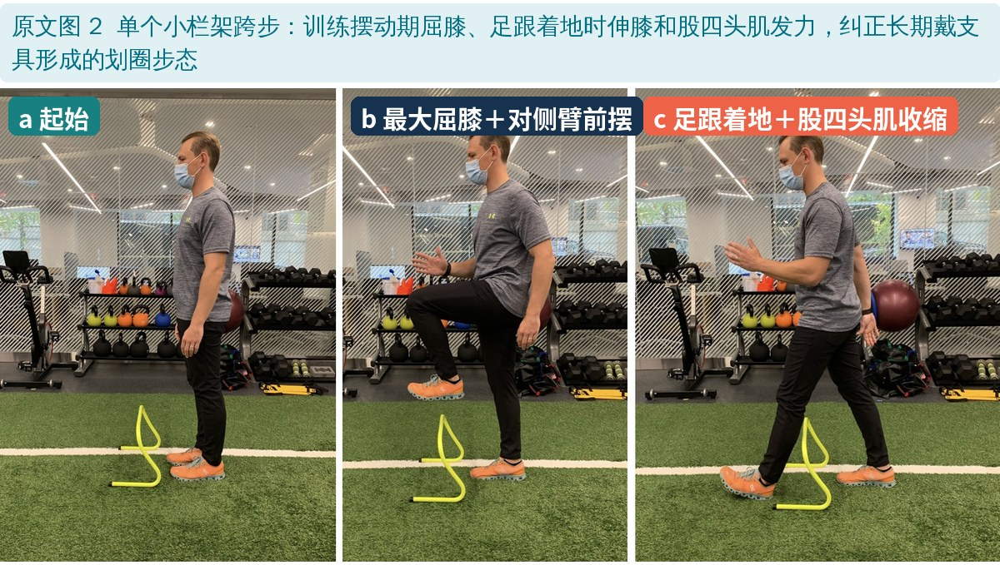
🔖原文图 2：单个小栏架跨步，纠正步态
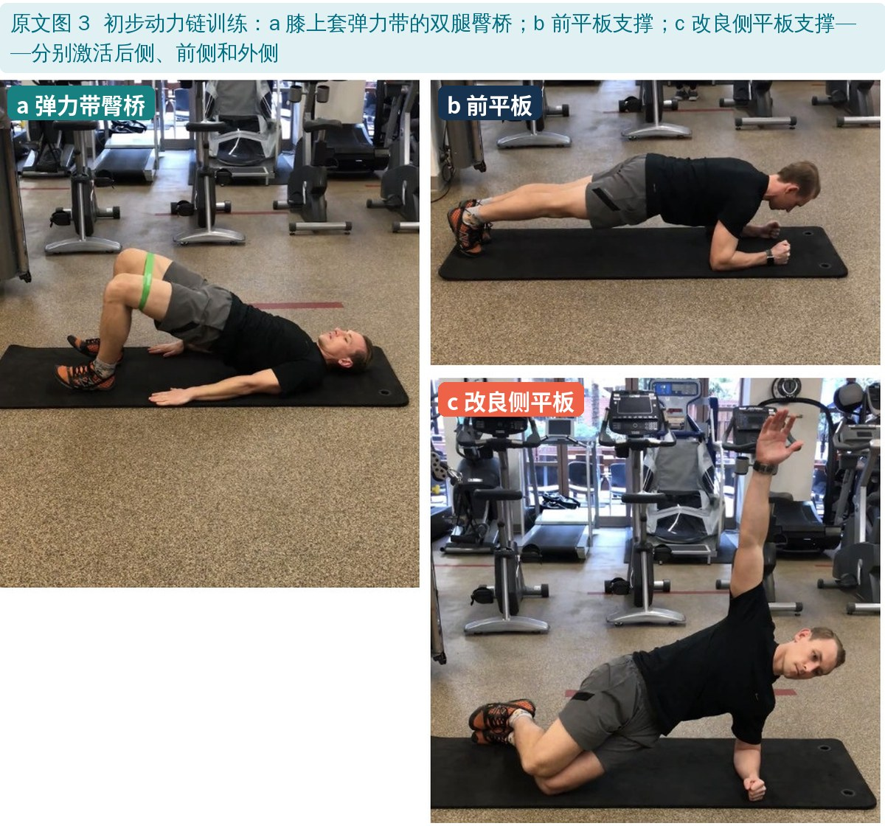
🔖原文图 3：初步动力链训练
• 管住“疼一点没关系”：很多人术前疼惯了，这时疼痛减轻就想提前回场，要讲清楚愈合需要时间
• 髋和臀：弹力带髋时钟、怪兽步；随时纠正膝外翻，否则会带到后面的动态动作里
• 学会髋铰链：深蹲、单腿硬拉、侧弓步都要把负荷分给髋，减轻膝的压力
• 离心控制：伸直位落地时软骨受力最大，屈膝离心控制能分散负荷；离心蹬腿、离心下台阶要贯穿后面所有阶段
• 心肺先练上肢：上肢功率车、坐姿攀爬机；TABATA（20 秒全力、10 秒休息，共 8 组 4 分钟）；约 8 周开始低阻力功率车，8～12 周间歇骑车；有泳池可深水跑
• 站起来练核心：Pallof 推三个平面；本体感觉从双腿不稳定面进阶到单腿加外界干扰
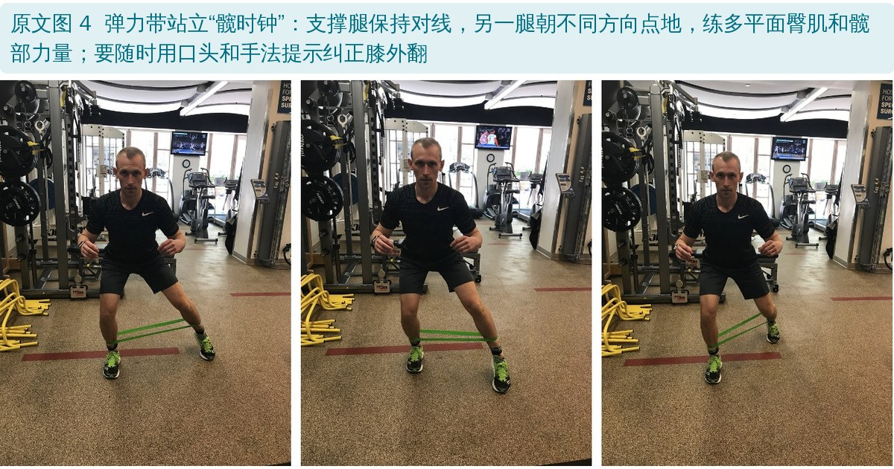
🔖原文图 4：弹力带站立“髋时钟”
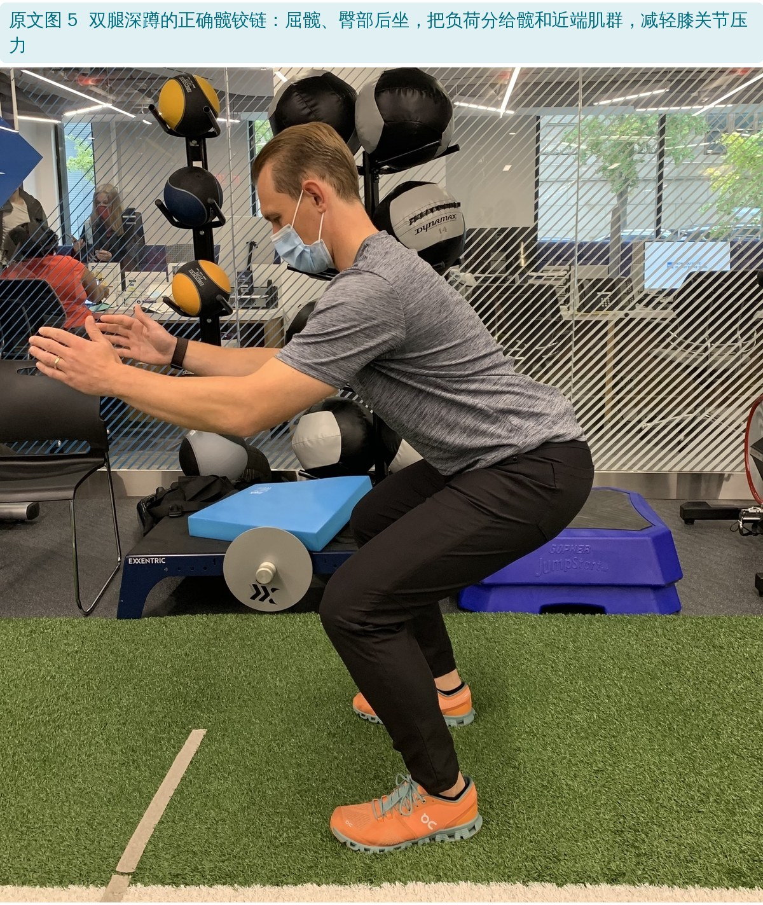
🔖原文图 5：双腿深蹲的正确髋铰链
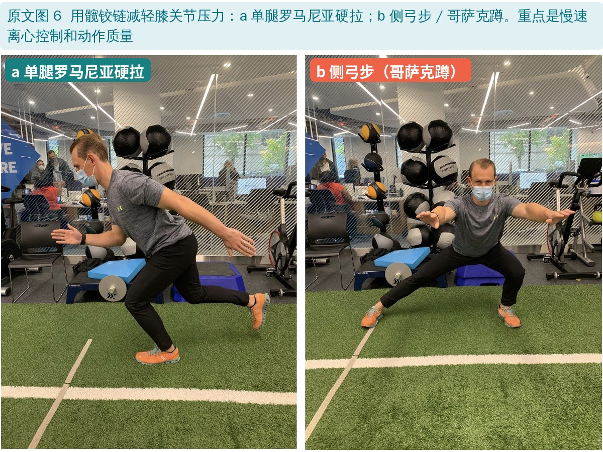
🔖原文图 6：用髋铰链减轻膝关节压力
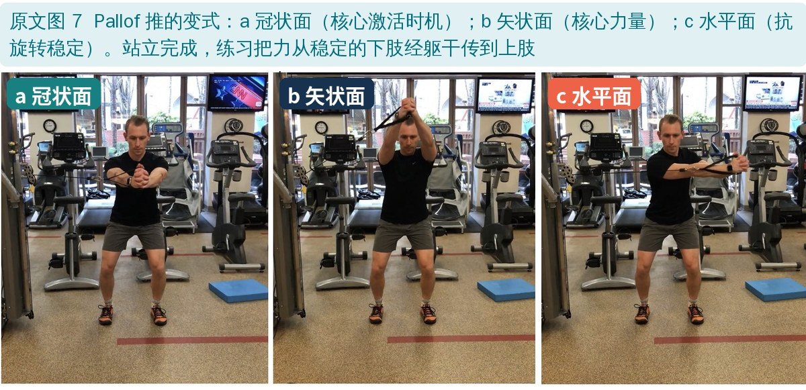
🔖原文图 7：Pallof 推的三个平面
• 动作评估：从肉眼观察到动作捕捉，找出长期疼痛留下的代偿
• 单腿力量：单腿蹲从垫块、悬吊辅助开始；离心下台阶；蹬腿向心和离心都加重
• 什么时候能跑：能平稳地走下 8 英寸（约 20 cm）台阶——没有躯干侧倾、骨盆下沉、膝内扣——且医生确认愈合，约 4～5 个月可开始减重跑台；高强度跑通常要 6～8 个月
• 动力链：单腿稳定加抗旋转核心稳定，做到之后才练爆发和重心转移
• 专项：篮球运球、原地投篮 → 轻上篮；网球原地挥拍 → 轻侧移；出现疼痛肿胀就先加强力量再推进
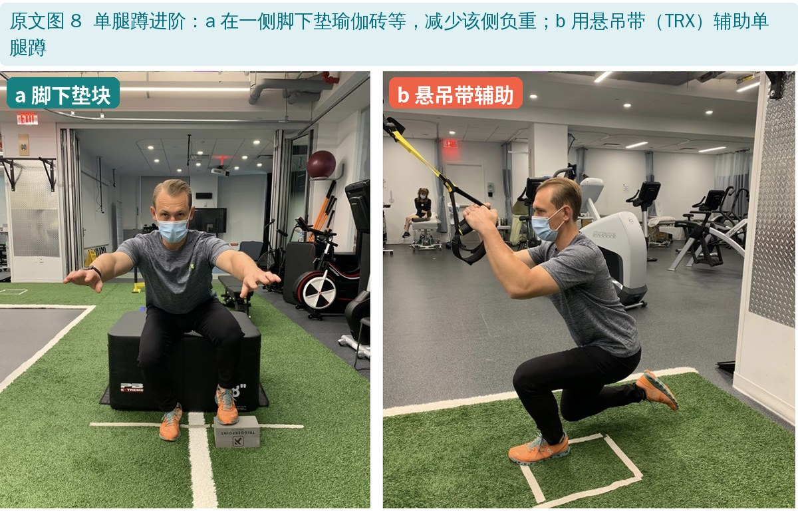
🔖原文图 8：单腿蹲进阶
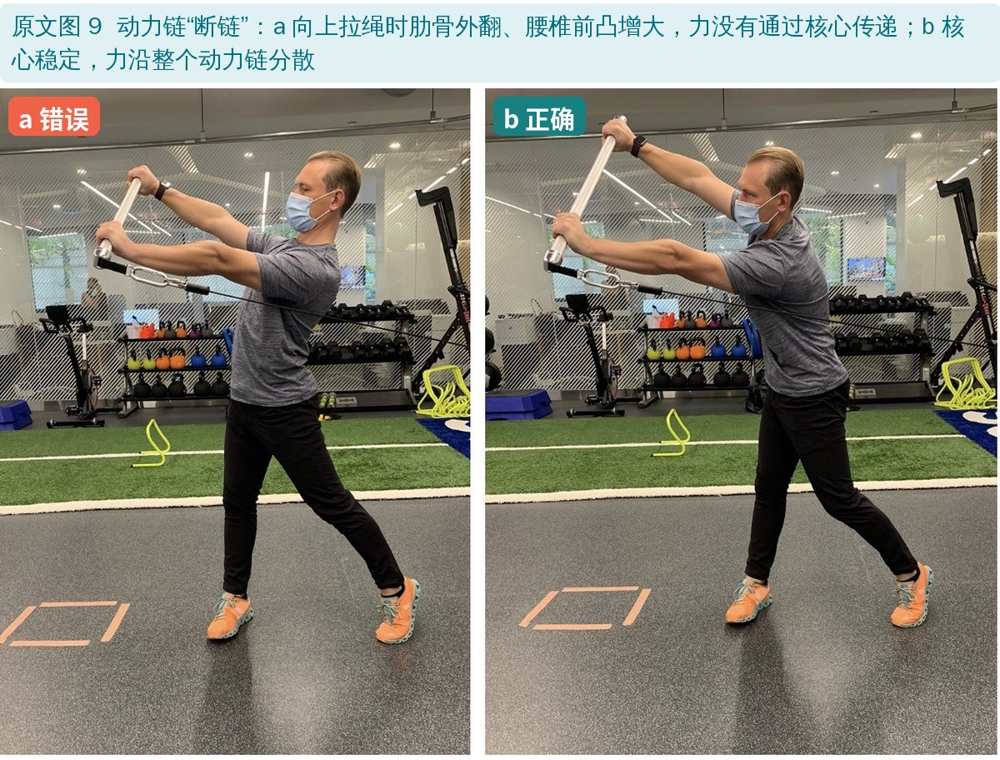
🔖原文图 9：动力链“断链”与正确
• 6 个月磁共振：软骨面完整、骨长入、无积液（骨愈合此时还没完成）；再加上动作好、股四头肌控制好、两侧力量差 <20%，才开始跑跳等高冲击活动
• 增强式训练：学会安全落地；注意髌股关节负荷
• 从计划到随机：先做预设的锥桶、传球训练，再做随机反应；非对抗 → 对抗 → 受控实战 → 全场；初期限制上场时间
• 回归标准：力量对称 ≥90%、动作对称、做专项动作不恐惧；由医生、治疗师、球队和运动员共同决定
• 别急着以为结束了：作者的经验是，康复结束后通常还要 3～4 个月体能训练才能恢复伤前竞技水平
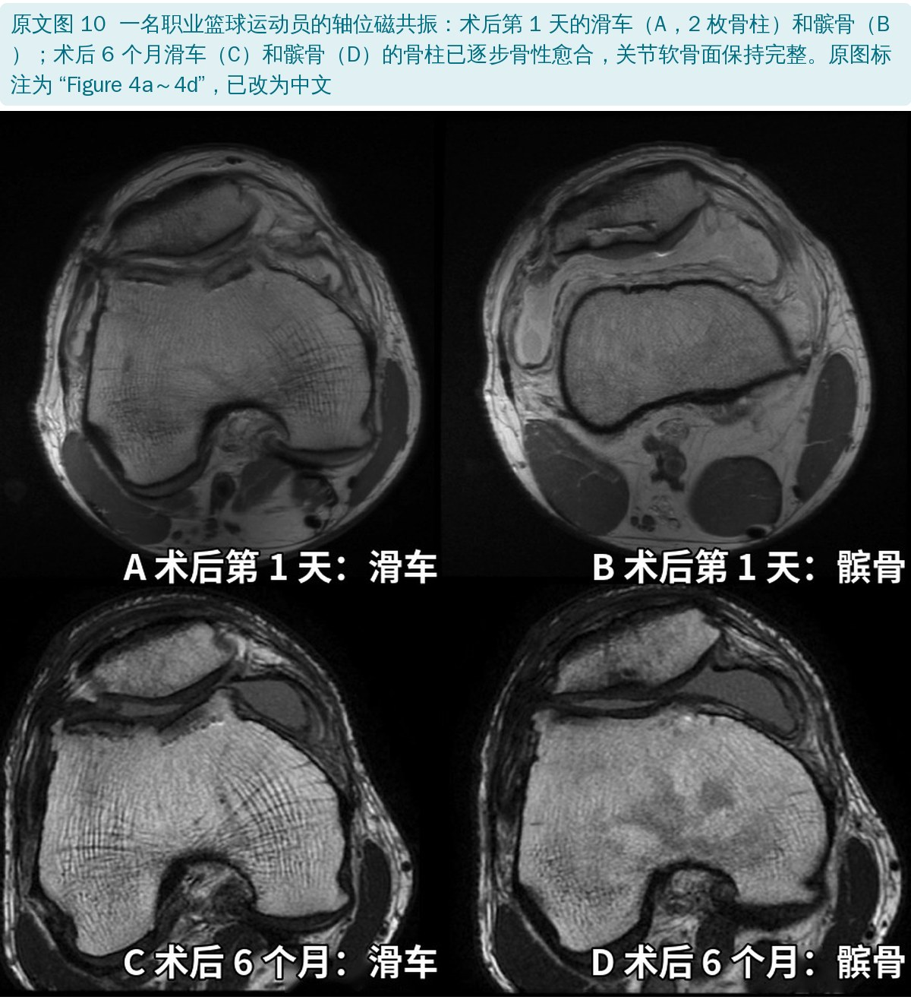
🔖原文图 10：术后第 1 天和 6 个月的磁共振（图中英文已改为中文）
| 研究 | 人数（平均年龄） | 运动水平 | 回归时间（月） | 回归比例 |
|---|---|---|---|---|
| Nielsen 2017 | 142（31.2） | 45% 高度竞技，55% 训练有素 | 方案为 4～6 | 75.2% |
| Frank 2017 | 180（32.7） | 33% 自报运动员 | 方案为 4～6（联合手术 8～12） | 63% 未再手术，87% 移植物存活* |
| Balazs 2018 | 11（22.8） | 64% NCAA，36% NBA | NBA 中位 20，NCAA 中位 8 | 80% |
| Krych 2012 | 43（32.9） | 74% 业余，23% NCAA，2% 职业 | 9.6 ± 3.0 | 88% 部分参与，79% 完全参与 |
| McCarthy 2017 | 13（未报告） | 69% 高中，31% NCAA | 7.9 ± 3.5 | 77% |
| Marmon 2019 | 1 | 职业 | 7 | 100% |
原文表 2：OCA 术后回归运动（中文翻译，略去 IKDC 列）。*该研究未单独报告运动员的回归数据
• 作者团队的大学和职业篮球运动员：回到同等水平比赛的比例 80%，中位时间 14 个月
• 顽固的积液：关节软骨虽被认为“免疫豁免”，但移植骨中的抗原和暴露的供体软骨细胞仍可能引起低程度免疫反应，导致反复积液。建议抗炎处理并限制关节负荷直到积液完全消退
• 分清酸痛从哪来：是增强式训练过量，还是专项活动推进太快？
• 经验方案：这是一家机构的经验总结，没有对照研究；不同医生的方案在负重、支具、进阶标准、回归时间上差异很大
• 愈合时间表借自其他研究：文中各期对应的组织愈合时间，引用的多是微骨折、自体软骨细胞移植、动物模型的研究，并非 OCA 本身
• 早负重有前提：作者明确说加速方案依赖于术中骨块固定牢靠，必须和手术医生沟通
• 数据来源杂：表 2 的研究人群从高中生到职业运动员，有的报告的是“未再手术”而不是回归比例
• 优点：每期都有目标、注意事项、具体动作和进阶标准；兼顾心肺、心理、动力链和专项训练，适合职业运动员的整体管理
• 屈膝是否限制：表 1 第 1 期注意事项写“前 2 周 90°”，正文却说 2 周内到 90° 即可、无症状可以继续增加（只有髌骨病灶才限制 90°）
• “完全负重”还“用拐”：表 1 第 2 期进阶标准写“完全负重、用拐、停支具”；负重也有两种说法：表 1 写“20% 足平放负重”，正文写“20% 足尖点地”
• 骑车开始时间：第 2 期已经用功率车练活动度，第 3 期正文又说“约 8 周开始低阻力功率车”；间歇骑车正文写 8～10 周，表 1 写 10～12 周
• 跑步时间：表 1 第 4 期写 16～18 周用减重跑台开始跑，正文写 4～5 个月；表 1 第 5 期又写“6 个月开始跑步计划”，正文写高强度跑 6～8 个月
• 台阶高度：第 3 期进阶标准是“下 6 英寸台阶”，开始跑步要求“下 8 英寸台阶”，两处衔接不清
• 回归比例：开头写 75%～82%，后文写 75%～88%，表 2 中还有 63% 和 100%；作者团队的中位回归时间正文写 14 个月，表 2 写 NBA 20 个月、NCAA 8 个月
• 引用错位：“医生经验影响术后方案”引了文献 8（1989 年关节固定后软骨生化变化）；“动作评估”引了文献 58（离心训练的肌肉形态研究）；“离心训练增力潜力更大”引了文献 59（篮球运动员 OCA 回归研究）
• 图注编号：图 10 的磁共振图里印着“Figure 4a～4d”；图 9 标题把 kinetic chain 写成“kinetic change”
• 许可：页脚写“Creative Commons Attribution 4.0”，实际链接是 CC BY-NC-SA 4.0
• 伸直优先、屈膝不强求：1 周到 0°，屈膝在不痛、不肿的范围内推进
• 负重按手术医生：OCA 的负重方案差别很大，早负重的前提是固定牢靠
• 盯住积液：积液是“推太快”的信号，也可能是免疫反应；出现就减量，等完全消退再推进
• 髋铰链＋离心控制：贯穿全程，用髋分担膝的负荷
• 能平稳下 8 英寸台阶：可作为开始跑步的简单门槛
• 别忘了心肺和心理：早期就用上肢练心肺、用坐位专项动作保持参与感；回归后还要 3～4 个月体能训练
欢迎关注骨科康复小黄公众号，获取更多物理治疗的专业知识！
📄参考文献：
Patel S, Amirhekmat A, Le R, Williams RJ III, Wang D. Osteochondral Allograft Transplantation in Professional Athletes: Rehabilitation and Return to Play. Int J Sports Phys Ther. 2021;16(3):941-958. doi:10.26603/001c.22085
原文以 CC BY-NC-SA 4.0 协议开放获取，版权归原作者所有。本文为非商业的学术交流中文解读，按相同协议（CC BY-NC-SA 4.0）分享：原文图 1～10 引自原文，图中中文标签为编者所加，图 10 中英文已改为中文；康复分期卡根据原文表 1 和正文整理，表格为中文翻译。仅供学习交流，如有侵权请联系删除。